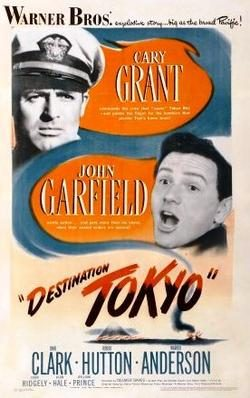

Destination Tokyo
Starring: Cary Grant, John Garfield, Alan Hale
Director: Delmer Daves
Writer: Delmer Daves, Albert Maltz
Producer: Jerry Wald, Jack Warner
Destination Tokyo is a 1943 black and white American submarine war film. The film was directed by Delmer Daves in his directorial debut, and the screenplay was written by Daves and Albert Maltz, based on an original story by former submariner Steve Fisher. The film stars Cary Grant and John Garfield and features Dane Clark, Robert Hutton, and Warner Anderson, along with John Ridgely, Alan Hale Sr. and William Prince.
Trivia
- Nominated for: Academy Award for Best Story.
- Production on Destination Tokyo began on June 21, 1943, and continued through September 4 of that year.
- Members of the cast spent time at the U.S. Navy's Mare Island Naval Shipyard in Vallejo, California, to familiarize themselves with submarine procedures and operations.
- Technical advisors to the film included the captain of the USS Wahoo, Dudley Walker Morton, and crewmember Andy Lennox.
Filming Locations
- California
Previous Showings
4 Runs • 2 Festivals
2,407 tickets sold
Original Billings: 1 run (January 30, 1944)
Original Run: January 30, 1944 (Sunday - Wednesday)
All runs on record (4):
- January 30, 1944 (Sunday - Wednesday)Cary Grant, John Garfield
- October 1 - 2, 1992 · 574 ticketsw/ Operation Petticoat
- May 3 - 9, 2002 · 1,355 ticketscg2-2002w/ Mr. Lucky
- July 20 - 21, 2023 · 478 ticketsSummer 2023: The Best of Cary Grant and Alfred Hitchcockw/ Gunga Din